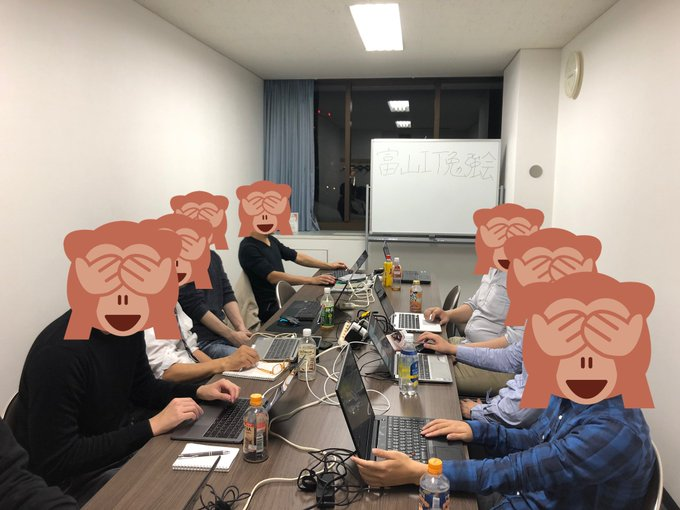

富山IT勉強会は登壇者も含めた参加者全員が楽しく有意義な時間を過ごすことを目指しています。そのため他の参加者に対する差別、ハラスメント、マウンティングなどの行為を固く禁じます。
ここでいう差別とは正当な理由なく冷遇・優遇といった特別な扱いをする行為を指します。性別、障碍、外見、人種、出身など本人の望む望まないに関わらず持った性質を理由に特別扱いをする行為、およびそれに類する理由をもとにした攻撃的な発言、脅迫、意図的な威力行為、ストーキング、つきまとい、不適切な身体接触、強要、性的な画像の掲示などを含む行動や発言などは許容致しません。
上記のような行為に遭った場合、または見かけた場合は躊躇なく主催またはお近くのスタッフにお申し付けください。行為をやめるよう厳重注意のうえ、勧告に従わない場合は会場から退出させます。また、運営が悪質と判断したポリシー違反者に対しては今後の参加をお断りさせて頂きます。